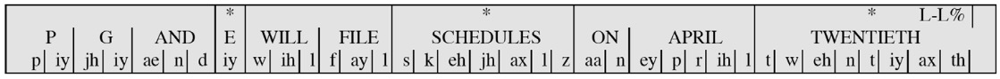
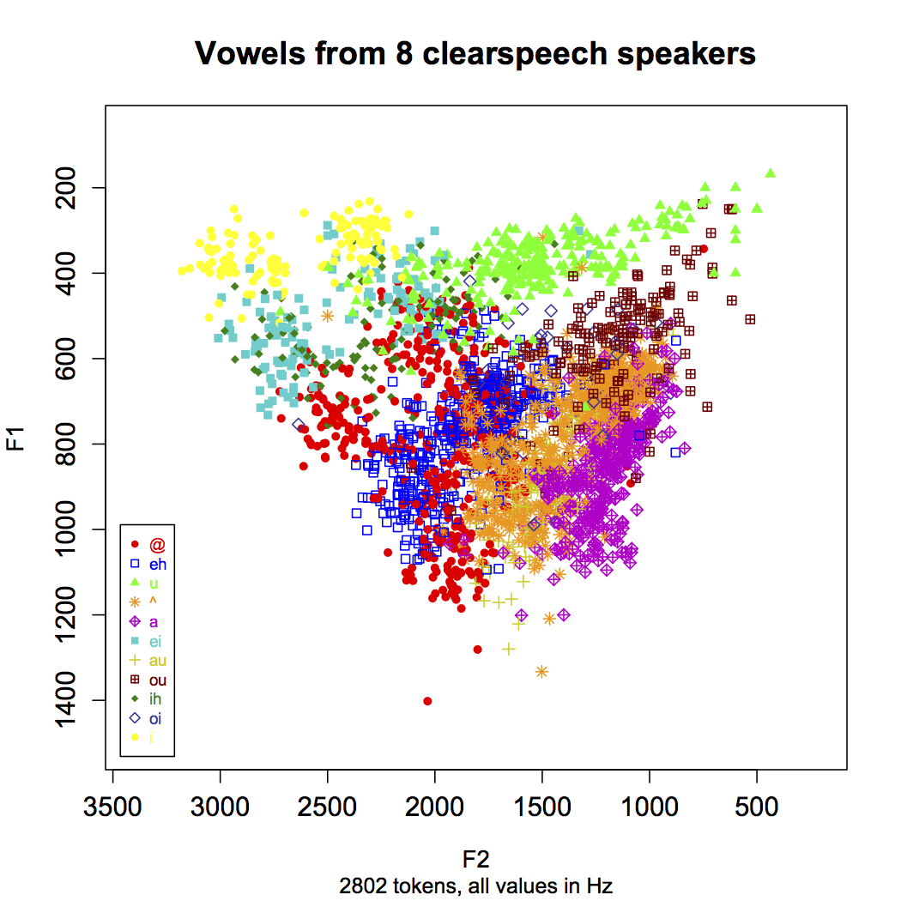

# What can we learn about humans from looking at speech technology? ### Will Styler <https://savethevowels.org/talks/colloq_cogs_speechlg.html> --- ### First, the elephant in the room - I'm not actually in Cognitive Science! --- - <img class="r-stretch" src="img/impostor.jpg"> --- ### Cognitive Science wasn't a separate program where I grew up - I have my BA, MA and Doctorate in Linguistics from the [University of Colorado at Boulder](https://www.colorado.edu/linguistics/) - CU Boulder had the [Institute of Cognitive Science](https://www.colorado.edu/ics/) - Collaborations between faculty in CS, Philosophy, Linguistics, Psych, Education, and more - I went to their talks and was advised by an affiliate, but there was not a COGS major or Ph.D Specialization - ... but I am bothered by COGS-flavored questions --- ### I'm a Computational Phonetician - This means I study human speech perception and production - ... using computational methods and models - This involves a mix of experiments, data analysis, recordings, and instrumental measurements - I collaborate lots with [Dr. Sarah Creel](https://quote.ucsd.edu/lasr/) --- ### I'm also Director of [Computational Social Science](https://css.ucsd.edu) at UCSD - We have [lots of Cognitive Scientists](https://css.ucsd.edu/people/faculty.html#Cognitive-Science)! - Including [Dr. Sean Tro] - So, this means I'm always thinking about computers as a tool for understanding humans! --- ## What is Speech Technology? --- ### We're getting very used to speech technology - Siri/Alexa/GoogleAssistant - ChatGPT Voice Mode - Speech-to-Text Keyboards - Text-to-Speech (e.g. in Twitch streams) --- ### There are many kinds of speech technology - Voice Activity Detection - Automatic Noise Filtering - Voice Compression and Encryption - Forced Alignment and Timestamping - Automatic Speech Recognition (ASR) - Speech Synthesis or Text-to-Speech (TTS) --- ### These are really interesting tools! - They allow new kinds of human-computer interactions - They are incredible tools for accessibility - They're great for processing large amounts of data - ... but the most interesting part of these tools? --- ### The most interesting part about them is that they work at all! --- ### Today's Plan - Why is speech so hard to produce? - How do computers produce speech? - Why is speech so hard to perceive? - How do computers perceive speech? --- ## Speech is Hard --- ### Human Speech is incredibly difficult - This is an incredibly intricate gestural dance in your mind and mouth - Let's try it --- ### "A Linguistics Major goes very well with Cognitive Science" - First, focus on your jaw - Now, on your tongue - Now, feel the vibes --- ### Ultrasound of Speech <img class="r-stretch" src="phonmedia/tools_ultrasound.jpg"> --- ### Ultrasound of Speech <video width="1200" height="600" controls id="video"> <source src="video/ultrasound_northwind.mp4"> </video> <br> <tiny>From University of Michigan Phonetics Lab</tiny> --- ### Many paths to the same sound --- ### Many paths to the same sound  --- ### Speech is *hard* - Speech is flapping bits of meat around in your head and throat while you expel air. - This creates tiny vibrations in the air, ca --- ### So, what do these vibrations look like? --- <img class="r-stretch" src="phonmedia/sky.png"> --- <img class="r-stretch" src="phonmedia/skyspectrogram.png"> --- ### There is incredible complexity in this process - Fluid movement of your mouth and tongue - Careful planning of air and breathing - Control of pitch, gestures, and other aspects --- ### ... and we want to do *this* with software?!? - 'Speech Synthesis' or 'Text-to-Speech' (TTS) - *How do we do that?* --- ### The Task - "A linguistics major goes very well with Cognitive Science" <audio controls src="phonmedia/lingwithcogs.mp3"></audio> --- ### Text Analysis - "OK, the human gave me text, what do they actually want me to say?" - This part is usually done in Python - This is actually hard - '1997' is many things --- ### "PG&E will file schedules on April 20." -  - <img class="wide" src="comp/tts_wave.jpg"> - (Thanks to Julia Hirschberg for this annotated chunk) --- ### Then, we turn that into audio - "I know what needs to be said, now, give me a wave I can play back for the humans" --- ### For a long time, we cheated using humans! - **Concatenative or 'Unit Selection' TTS** chops up bits and pieces of existing speech to create new speech - You record a huge database of speech from a voice actor, with optimum 'coverage' - You update as new words emerge (e.g. COVID, rawdogging, skibidi) - **You then combine these words into sentences to match the text** - ... and you use fancy algorithms to smooth the results out. --- ### This isn't easy - You have to choose the best recorded token - You might have 500 recordings of 'went' - Context matters a lot - "park" can sound very different in different places with words - You can't get full coverage - "Ruaridh", "Krivokapic", "simp", "La Jolla" --- ### The result can be imperfect <video controls src="video/donutquantity.mp4"></video> --- ### ... and you've only got one voice - Which means that each new person needs a new collection of data --- ### Then, Artificial Neural Networks arrived, and everything changed <img class="r-stretch" src="dalle/cuteneuralnetwork.jpg"> --- ### The World's Worst Introduction to Neural Networks <img class="r-stretch" src="img/dnn.jpg"> --- ### Take COGS 181 to actually understand this! --- ### Neural TTS is quite powerful - Train a neural network with text and corresponding audio - Make it output something which can made into a wave very readily - Either make the wave directly, or make an intermediate representation which can be turned into a wave --- ### [TacoTron2](https://arxiv.org/pdf/1712.05884) is a relatively simple, open system - It takes text, and generates spectrograms, chunk-by-chunk, which can be turned into a waveform --- ### TacoTron 2 <img class="r-stretch" src="phonmedia/tts_tacotron2.png"> --- ### This allows us to go from text to speech! - We feed in text, and we get back a wave, with no humans involved past making training data! - The results are getting very, very good. <audio controls src="comp/tts_lingcogs.mp3"></audio> --- ### The State of the Art is Advanced, but closed - Current state of the art models from ElevenLabs, OpenAI, Google, and Amazon are all closed and proprietary - If you want the best TTS in the world, it has to happen on somebody else's computer - Details are often not published and considered "trade secrets" - They may well be open-source models with changes and tweaks - It's not currently possible to teach the state of the art in TTS! - ... and this should disturb us as a society --- ### Neural TTS can be trained using *any* voice - You can build a model from the ground up using any voice you'd like - [Except Scarlett Johansson](https://www.npr.org/2024/05/20/1252495087/openai-pulls-ai-voice-that-was-compared-to-scarlett-johansson-in-the-movie-her) - If all your training data are from a bored Bostonian, you'll end up with a bored Bostonian TTS voice - This is very expensive, though, and doesn't scale well at all - You also need *lots* of data from the new speaker --- > All human beings are born free and equal in dignity and rights. They are endowed with reason and conscience and should act towards one another in a spirit of brotherhood. <audio controls src="comp/tts_rights_brianvoice.mp3"></audio> <audio controls src="comp/tts_rights_rachelvoice.mp3"></audio> --- ### ... but isn't linguistic information separate from talker information? - Why can't we just adapt to new voices? --- ### We can think of all speech as having 'content' and 'style' - Voices express linguistic 'content' - Phonemes, with ordering, and necessary tone/prosody for comprehension - This is 'all we need' to understand the utterances - 'Style' is everything else we've been talking about - 'Speaker' identity - Social components - Emotional content - Plus prosodic factors (e.g. speed, emphasis, prosodic 'tunes', sarcasm) --- ### Couldn't we just abstract out the 'style' component and apply it to whatever Linguistic content we'd like? - Yes! --- ### Here's a Multi-Speaker Version of TacoTron 2 <img class="r-stretch" src="phonmedia/tts_tacotron2_multispeaker.png"> --- ### The results of this are... terrifying - ... and has given rise to 'Deepfake' voices --- ### Neural Styler Transfer <audio controls src="comp/tts_will_ling.wav"></audio> (TacoTron2) <audio controls src="comp/tts_will_elclone.wav"></audio>(ElevenLabs) (Credit to Erick Amaro and Mia Khattar!) --- ### Multilingual Examples <audio controls src="comp/tts_will_english.mp3"></audio> (English) <audio controls src="comp/tts_will_french.mp3"></audio> (French) <audio controls src="comp/tts_will_spanish.mp3"></audio> (Spanish) <audio controls src="comp/tts_will_mandarin.mp3"></audio> (Mandarin) <audio controls src="comp/tts_will_italian.mp3"></audio> (Italian) <audio controls src="comp/tts_will_russian.mp3"></audio> (Russian) <audio controls src="comp/tts_will_japanese.mp3"></audio> (Japanese) --- ### This system isn't perfect > Adenocarcinoma in Tubovillious Adenoma bona fide certiorari de jure collusion RICO ex post facto CVN AWACS Escapement Tourbillion Remontoir de Egalite <audio controls src="comp/tts_will_jargon.mp3"></audio> --- ### Prosody is still hard <audio controls src="comp/tts_will_rick.mp3"></audio> --- ### ... but OMG, this thing can do arbitrary speech, in an arbitrary voice - ... and it's never had a tongue, had phonics training, and doesn't actually know anything at all about mouths - Arguably, it doesn't know anything about English - ... although some systems use a language model too - *This is amazing!* - ... but it can model more complexity still --- ### Code Switching It's like sometimes mezclo un poco de español con my English, cuando me siento particularmente spicy, y tengo curiosidad to know cómo la TTS handles it. <audio controls src="comp/tts_will_codeswitch.mp3"></audio> --- ### Wow. - Not only can exposure to data allow a deep neural network to learn to map written language into speech in one language - ... but it can do it for two languages - ... at once - ... with clear mixing of the two --- # This shouldn't work - Yet, here we are - Espicy! --- # What about Speech Perception? --- ### Speech Perception is *hard* - Speech is flapping bits of meat around in your head and throat while you expel air. - This creates tiny vibrations in the air - **Speech perception is turning the resulting vibrations in the air back into language** --- ### For computers, this is 'Automatic Speech Recognition' (ASR) - The task is to turn speech into equivalent text - This is *really, really hard* --- ### Let's focus on one of the really hard problems --- ## Vowel Perception --- ### What is a vowel? What kind of vowels are we talking about? --- <img src="phonmedia/aeiou.png"> --- <img class="big" src="phonmedia/vowelcharts_english.png"> --- ### Review: What is a vowel? * A vowel is voicing passing through (and resonating in) an unobstructed vocal tract! * If we change the position of the tongue, we change the resonances --- <img class="big" src="phonmedia/voweltongue.png"> --- ### Review: What is a vowel? A vowel is voicing passing through (and resonating in) an unobstructed vocal tract! If we change the position of the tongue, we change the resonances * Different resonances *filter* the sound differently and determine the vowel quality * **Different tongue shapes create different resonances, and different vowels!** --- <img class="big" src="phonmedia/voweltongue2.png"> --- ### What do vowels sound like? * We talk about vowel quality in terms of "formants" * These are bands of the spectrum where the energy is strongest * The frequencies of these formants are our primary cues --- <img class="big" src="phonmedia/iformants.png"> --- <img class="big" src="phonmedia/iformantslabeled.png"> --- ### Vowel formants * F1 and F2 are generally considered to be the most important * F3 is good for rounding and rhoticity --- ### Formants alone can be enough for some perception! --- ### Let's listen to some sounds <audio controls> <source src="phonmedia/lingmajor_f3.mp3" type="audio/mp3"> </audio> <audio controls> <source src="phonmedia/lingmajor_f2.mp3" type="audio/mp3"> </audio> <audio controls> <source src="phonmedia/lingmajor_f1.mp3" type="audio/mp3"> </audio> --- ### Let's listen to some sounds <audio controls> <source src="phonmedia/lingmajor_f3.mp3" type="audio/mp3"> </audio> <audio controls> <source src="phonmedia/lingmajor_f2.mp3" type="audio/mp3"> </audio> <audio controls> <source src="phonmedia/lingmajor_f1.mp3" type="audio/mp3"> </audio> <br> ### Now let's play all three at once! <audio controls> <source src="phonmedia/lingmajor_sine.mp3" type="audio/mp3"> </audio> --- ### Let's listen to some sounds <audio controls> <source src="phonmedia/lingmajor_f3.mp3" type="audio/mp3"> </audio> <audio controls> <source src="phonmedia/lingmajor_f2.mp3" type="audio/mp3"> </audio> <audio controls> <source src="phonmedia/lingmajor_f1.mp3" type="audio/mp3"> </audio> <br> ### Now let's play all three at once! <audio controls> <source src="phonmedia/lingmajor_sine.mp3" type="audio/mp3"> </audio> <br> ### Does this help? <audio controls> <source src="phonmedia/lingmajor_orig.mp3" type="audio/mp3"> </audio> --- ### So, vowels are basically formant patterns --- <img class="big" src="phonmedia/vowelformants.gif"> <small>Different American English vowels, as spoken by a male speaker</small> --- ### ... and vowel formants map to articulation! --- <img class="big" src="phonmedia/formantsarticulation.jpg"> --- ## Speaker Variation! --- ### Speaker Vowel Space Variation * Different speakers produce different resonances, even for the “same” vowels * Vocal tracts can be shorter, longer, wider... --- <img class="big" src="ling_memes/vocaltract.jpg"> --- ### Speaker Vowel Space Variation Different speakers produce different resonances, even for the “same” vowels * Speaker can have colds or allergies, can have more nasal voices... * Sociolinguistic factors galore * Every person has a different set of basic vowel formant positions * This is called the speaker’s “vowel space” --- <img class="big" src="phonmedia/ipaformantsgraph.png"> --- <img class="big" src="phonmedia/clearspeech_speakeraverages.png"> --- ### Moment-to-moment Vowel Variation * Even the same speaker will have variation from moment to moment * Sometimes we misarticulate, accidentally making the wrong vowel quality * Or we talk with food in our mouths, producing different resonances * Or sometimes, we’re just plain lazy * This leads to constant and massive changes in vowel production --- <img class="big" src="phonmedia/clearspeech_speakeraverages.png"> ---  --- <img class="big" src="phonmedia/clearspeech_alltokensellipses.png"> --- <img class="big" src="humorimg/trainwreck.png"> --- ### Every person you've ever talked with has had different vowel formant patterns * ... and yet, we understand each other, somehow --- <img class="big" src="img/magic.jpg"> --- ### There are a few ways this might work --- ### Speaker-intrinsic vowel space normalization * Normalization is a process that “happens” * You meet somebody, you create a model of their vowel space, and you move on * These models of speaker vowels are maintained in memory * One model per person, and a new model each time! --- ### Direct Realism - We're using our senses to form a model of reality, including inside the mouth - We don't really care about the acoustics per se, just estimating the gestures - "Based on everything I'm hearing, this seems like she's making the same tongue shape I hear in /i/" - This includes lots of adjustments 'for free' --- ### Speaker-extrinsic vowel space normalization * We store information from *every vowel we hear*! * Normalization is then just bulk comparison and probability * Vowel identities are probabilistically determined * Perhaps we also segment by speaker, dialect, language, etc --- --- ### Humans are able to do this process - ... but what about ASR? --- ## ASR --- ### ASR builds mappings from audio to text - We feed the system lots of text, and lots of corresponding audio - It learns the patterns of sound associated with a given text - Some use language models to give better predictions --- ### Vintage ASR used to require explicit speaker normalization - In the HMM days, ASR software required personalization and 'training' - Setup began with "Read these texts aloud" - It would then process for a little while as it 'customized' to your voice - The model *simply wouldn't work* without this level of customization --- ### ... but when Neural Networks happened, things changed --- ### Whisper's architecture is complicated <img class="r-stretch" src="phonmedia/asr_whisper.png"> --- ### ... but it is wildly effective - It works relatively quickly - On relatively low-end hardware - ... and most amazing of all... ### Whisper can get human-like performance in speech transcription* <img class="r-stretch" src="phonmedia/asr_whispervshumans.png"> --- ### Wait, what was that asterisk? ---